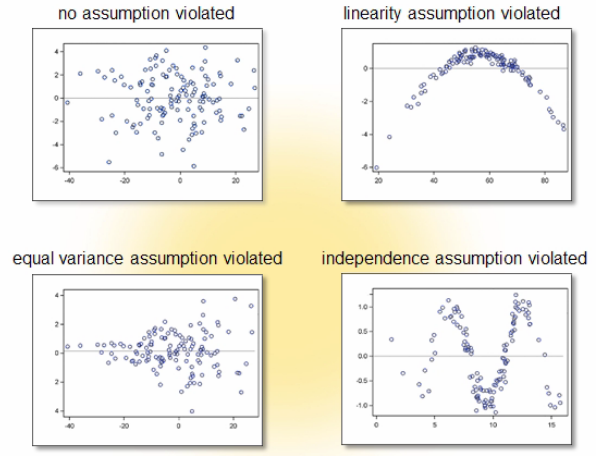
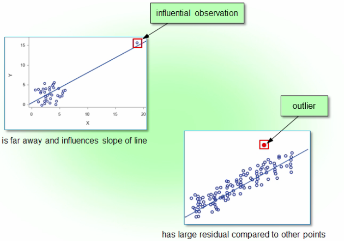

Model Post-Fitting for Inference
How to verify the assumptions and diagnose problems that you encounter in linear regression?
Examining ResidualsLink
You can use the residual values (difference between each observed value of $Y$ and its predicted value) from the regression analysis to verify the assumptions of the linear regression. Residuals are estimates of the errors, so you can plot the residuals to check the assumptions of the errors.
- You can plot residuals vs the predicted values to check for violations of equal variances
- You can also use this plot to check for violations of linearity and independence
- You can plot the residuals vs the values of the independent variables to further examine any violations of equal variances (you can see which predictor contributes to the violation of the assumption)
- You can use a histogram or a normal probability plot of the residuals to determine whether or not the errors are normally distributed
You want to see a random scatter of the residual values above and below the reference line at 0. If you see patterns or trends in the residual values, the assumptions might not be valid and the models might have problems.

Note
To take autocorrelation (correlated over time) into account, you might need to use a regression procedure such as PROC AUTOREG
You can also use these plots to detect outliers, which often reflect data errors or unusual circumstances. They can affect your regression results, so you want to know whether any outliers are present and causing problems and investigate if they result from data entry error or some other problem that you can correct.
PROC REGLink
1 2 3 4 5 | |
QQrequests a residual quantile-quantile plot to assess the normality of the residual errorRESIDUALBYPREDICTEDrequests a plot of residuals by predicted values to verify the equal variance assumption, the independence assumption and model adequacyRESIDUALSrequests a panel of plots of residuals by the predictor variables in the model: if any of the Residual by Regressors plots show signs of unequal variance, we can determine which predictor variable is involved in the problem
Identifying Influential ObservationsLink
An influential observation is different from an outlier. An outlier is an unusual observation that has a large residual compare to the rest of the points. An influential observation can sometimes have a large residual compared to the rest of the points, but it is an observation so far away from the rest of the data that it singlehandedly exerts influence on the slope of the regression line.

Using STUDENT residuals to detect outliersLink
Also known as studientized or standardized residuals, the STUDENT residuals are calculated by dividing the residual by their standard errors, so you can think of them as roughly equivalent to a z-score.
- For relatively small sample sizes, if the absolute value of the
STUDENTresidual is $>2$, you can suspect that the corresponding observation is an outlier - For large sample sizes, it's very likely that even more
STUDENTresiduals greater than $\pm2$ will occur just by chance, so you should typically use a larger cutoff value of $>3$
Using COOKSD statistics to detect influential observationsLink
For each observation, the Cook's D statistic is calculated as if that observation weren't in the data set as well as the set of parameter estimates with all the observations in your regression analysis.
- If any observation has a Cook's D statistic $>4/n$ that observation is influential
- The Cook's D statistic is most useful for identifying influential observations when the purpose of your model is parameter estimation
Using RSTUDENT residuals to detect influential observationsLink
RSTUDENT residuals are similar to STUDENT residuals. For each observation, the RSTUDENT residual is the residual divided by the standard error estimated with the current observation deleted.
- If the RSTUDENT residual is different from the
STUDENTresidual, the observation is probably influential - If the absolute value of the
RSTUDENTresiduals is $>2$ or $>3$, you've probably detected an influential observation
Using DFFITS statistics to detect influential observationsLink
DFFITS measures the impact that each observation has on its own predicted value. For each observation, DFFITS is calculated using two predicted values:
- The first predicted value is calculated from a model using the entire data set to estimate model parameters
- The second predicted value is calculated from a model using the data set with that particular observation removed to estimate model parameters
- The difference between the two predicted values is divided by the standard error of the predicted value, without the observation
If the standardized difference between these predicted values is large, that particular observation has a large effect on the model fit.
- The general cutoff value is $2$
- The more precise cutoff is $2 \cdot sqrt(p/n)$
- If the absolute value of DFFITS for any observation is $>$ cutoff value, you've detected an influential observation
DFFITSis most useful for predictive models
Using DFBETAS statistics to explore the influenced predictor variableLink
To help identifying which parameter the observation might be influencing most you can use DFBETAS (difference in betas). It measure the change in each parameter estimate.
- One
DFBETASis calculated per predictor variable per observation - Each value is calculated by taking the estimated coefficient for that particular predictor variable using all the data, subtracting the estimated coefficient for that particular predictor variable with the current observation removed and dividing by its standard error
- Large
DFBETASindicate observations that are influential in estimating a given parameter:- The general cutoff value is $2$
- The more precise cutoff is $2 \cdot sqrt(1/n)$
PROC GLMSELECTLink
1 2 3 4 5 6 7 8 9 10 11 12 13 14 15 16 17 18 19 20 21 22 23 24 25 26 27 28 29 30 31 32 33 34 35 36 37 38 39 40 41 42 43 44 | |
PROC GLMSELECTautomatically creates the&_GLSINDmacro variable which stores the list of effects that are in the model whose variable order can be checked in the Influence Diagnostics panel- The
ODSstatement takes the data that creates each of the requested plots and saves it in the specified data set - The
LABELoption includes a label for the extreme observations in the plot (labeled with the observation numbers if there is not ID specified)
Having influential observations doesn't violate regression assumptions, but it's a major nuisance that you need to address:
- Recheck for data entry errors
- If the data appears to be valid, consider whether you have an adequate model (a different model might fit the data better). Divide the number of influential observations you detect by the number of observations in you data set: if the result is $>5\%$ you probably have the wrong model.
- Determine whether the influential observation is valid but just unusual
- As a general rule you should not exclude data (some unusual observations contain important information)
- If you choose to exclude some observations, include in your report a description of the types of observations that you excluded and why and discuss the limitation of the conclusions given the exclusions
Detecting CollinearityLink
Collinearity (or multicollinearity) is a problem that you face in multiple regression. It occurs when two or more predictor variables are highly correlated with each other (redundant information among them, the predictor variables explain much of the same variation in the response). Collinearity doesn't violate the assumptions of multiple regression.
- Collinearity can hide significant effects (if you include only one of the collinear variables in the model it is significant but when there are more than one included none of them are significant)
- Collinearity increases the variance of the parameter estimates, making them unstable (the data points don't spread out enough in the space to provide stable support for the plane defined by the model) and, in turn, this increases the prediction error of the model
When an overall model is highly significant but the individual variables don't tell the same story, it's a warning sign of collinearity. When the standard error for an estimate is larger than the parameter estimate itself, it's not going to be statistically significant. The SE tells us how variable the corresponding parameter estimate is: when the standard errors are high, the model lacks stability.
1 2 3 4 | |
- The
VIF(variance inflation factor, $VIF_i=1/(1-R_i^2)$) option measures the magnitude of collinearity in a model (VIF$>10$ for any predictor in the model, those predictors are probably involved in collinearity) - Other options are
COLLIN(includes the intercept when analyzing collinearity and helps identify the predictors that are causing the problem) andCOLLINOINT(requests the same analysis asCOLLINbut excludes the intercept)
Effective modeling cycleLink
- You want to get to know your data by performing preliminary analysis:
- Plot your data
- Calculate descriptive statistics
- Perform correlation analysis
- Identify some good candidate models using
PROC REG:- First check for collinearity
- Use all-possible regression or stepwise selection methods and subject matter knowledge to select model candidates
- Identify the good ones with the Mallows' (prediction) or Hocking's (explanatory) criterion for $C_p$
-
Check and validate your assumtions by creating residual plots and conducting a few other statistical tests
-
Deal with any problems in your data:
- Determine whether any influential observations might be throwing off your model calculations
- Determine whether any variables are collinear
-
Revise your model
-
Validate your model with data not used to build the model (prediction testing)